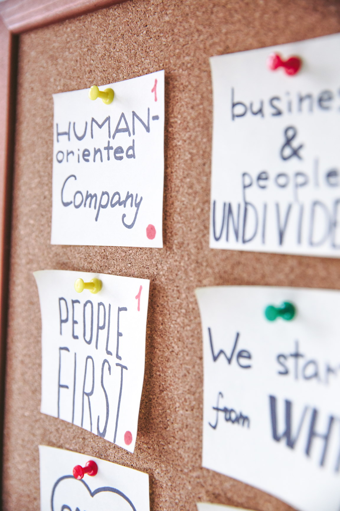

Materi 1
Tujuan Perancangan User Interface
Materi yang akan dipelajari di video kali ini adalah tujuan perancangan
user interface, agar perancangan user interface sesuai dengan fungsinya.

Materi 2
Prinsip Desain UI
Materi yang akan dipelajari di video kali ini adalah prinsip - prinsip
desain UI yang biasa digunakan oleh banyak orang.
Materi 3
Interaksi Pengguna
Disini, kalian akan mempelajari bagaimana cara mengetahui interaksi
pengguna pada saat perancangan User Interface.

Materi 4
Perancangan Template User Interface
Di video terakhir, kalian akan mempelajari bagaimana caranya merancang template user interface berdasarkan studi kasus.